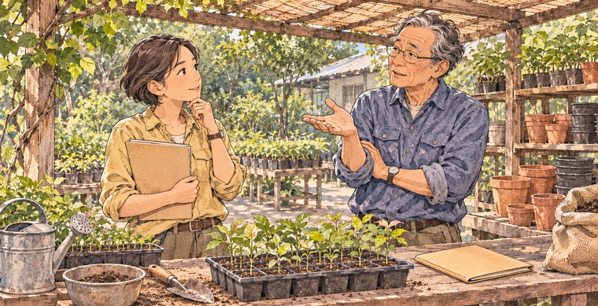

SUS-19 · 香港 · 10–15分钟 · 资金额外性 · 项目实施风险和减排或移除成果逆转风险 · 气候行动出资
一个碳项目，不出资也会做吗？

气候融资也要考虑反事实情景
2022年10月28日，香港绿色和可持续金融跨机构督导小组对自愿碳市场 Core Climate 的推出表示欢迎。有了交易市场，并不意味着每项活动都能带来额外的气候效益。案例中的虚构公司考虑的是直接出资，不是购买碳信用，也不是为了获取投资回报。
课堂决策
香港一家虚构公司有100,000港元预算，可用于一项自愿气候行动出资。公司必须采取的环保行动和自身减排计划另有资金，仍将继续。公司可以支持一项拟议的恢复活动，也可以暂时保留预算，等证据更明确后再决定。无论选哪种做法，都不能据此声称实现了碳抵消、碳中和或可量化的排放补偿。两项提案均不提供碳信用、财务回报或对气候成效的独占权。
A是一个已在实施的恢复项目，团队经验丰富，已有落实的资金，现寻求资助以扩大恢复面积。B是一个新的恢复项目，拟开展的活动有赖于新增资金。两项提案各自申请全部100,000港元。初步说明没有明确区分哪些活动已有资金、哪些活动要靠这笔出资才能开展。公司尚未拨款，也未对外宣布。
本练习设定，两处场地的合法用地许可、适当的环境评估和社区知情同意均已核实。两项提案都不会迫使居民迁离，也不会把现有的法定恢复义务转嫁给出资方。这些保障并不能证明会增加碳储量，也不能证明实施成效会持续。公司可在拨款前要求为各项目设定专门的阶段目标、单列预算，并提供独立报告；不能仅凭面积或出资额推算以吨计的气候效益。
| 提案 | 申请资助金额 | 初步吸引力 |
|---|
| A：已在实施的恢复项目 | HK$100,000 | 团队经验丰富，拟扩大恢复面积 |
| B：新的恢复项目 | HK$100,000 | 活动有赖于新增资金 |
你的决策你会暂时倾向于支持现有项目扩大面积，还是支持新项目？要判断没有你这笔出资会发生什么，你还需要了解哪些情况？
第二轮 · 多了一项资料
资金记录显示，A的基准部分为十公顷，资金已全部落实，即使这家公司不出资也会照常推进。新增的两公顷另列预算100,000港元，不在基准部分的拨款范围内。现有团队可以承担扩展工作，种植所需物资也已具备，扩展预算还包含按计划开展的养护和监测。截至决策期限，没有其他出资方承诺为扩展部分提供资金。这些证据支持的是新增两公顷存在资金缺口，而不是全部十二公顷都缺资金。
B拟恢复六公顷，总资金缺口为100,000港元；没有这笔资金，就不会按现有方案启动。苗木供应尚未落实，已核算费用的养护计划取决于一项仍在协商的季节性用水安排。在这些实施条件落实前，资金暂不拨付；如果条件未能落实，就不拨款。两项提案都面临天气和植株存活方面的风险。两者都没有经独立量化的额外净碳储量、经核实的长期逆转应对安排，也没有证据证明成效能够永久维持。面积更大，不等于气候效益更大。
你的决策根据这些事实，你会支持哪个项目，还是两个都不支持？请把你的出资能够促成的额外活动、这些活动能否落实以及成效能否持久分开考虑，并说明拨款前需要哪些证据。
问问这笔钱会改变什么
A原有的十公顷是资金已落实的基准部分。公司出资时需要考虑的是新增的两公顷；支持A不一定只是替代已承诺的资金。B的六公顷全部存在资金缺口，但有资金缺口不等于方案能够落实。要核查其他资金来源、预算用途限制，以及没有这笔钱活动是否仍会开展，而不是把“新”当成证据。
把额外性和项目实施分开判断
A的扩展规模较小，已有更多实施安排落实。B拟恢复的面积较大，但苗木供应和用水安排尚未落实。六公顷是两公顷的三倍，但这只是面积之比，不是碳效益之比。植株存活、基准条件、场地之外的影响、监测以及减排或移除成果逆转风险，仍是重要因素。
出资不等于经核实的排放补偿
只要符合公司明确的出资目的和证据要求，有条件地支持任一项目都可以有充分理由。暂缓也是合理选择。记录所支持的活动，保障资金已落实的基准部分，明确各阶段目标所需的证据，并披露实施中的不确定性。不要把出资金额、一次种植活动或恢复面积当作声称实现碳中和的依据。是否促成额外活动、是否测得净气候效益、碳能否长期储存，是三项不同的检验。
教师说明
SUS-15评估生境连通性；GVR-04评估环境声明的范围。本案例要求在自愿出资前，先考虑没有这笔资金的反事实情景。碳信用完整性原则为这些问题提供参考，但不能为这些虚构的拨款提供认证，也不能据此认定其符合正式的碳信用额外性要求。所有面积、预算和安排均为本案例原创假设。本案例不赋予任何项目标准认定、碳信用标签或永久性保证。
第二轮
资金记录显示，A的基准部分为十公顷，资金已全部落实，即使这家公司不出资也会照常推进。新增的两公顷另列预算100,000港元，不在基准部分的拨款范围内。现有团队可以承担扩展工作，种植所需物资也已具备，扩展预算还包含按计划开展的养护和监测。截至决策期限，没有其他出资方承诺为扩展部分提供资金。这些证据支持的是新增两公顷存在资金缺口，而不是全部十二公顷都缺资金。
B拟恢复六公顷，总资金缺口为100,000港元；没有这笔资金，就不会按现有方案启动。苗木供应尚未落实，已核算费用的养护计划取决于一项仍在协商的季节性用水安排。在这些实施条件落实前，资金暂不拨付；如果条件未能落实，就不拨款。两项提案都面临天气和植株存活方面的风险。两者都没有经独立量化的额外净碳储量、经核实的长期逆转应对安排，也没有证据证明成效能够永久维持。面积更大，不等于气候效益更大。
你的决策根据这些事实，你会支持哪个项目，还是两个都不支持？请把你的出资能够促成的额外活动、这些活动能否落实以及成效能否持久分开考虑，并说明拨款前需要哪些证据。